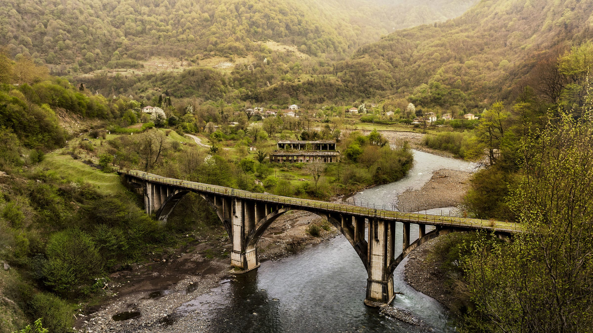
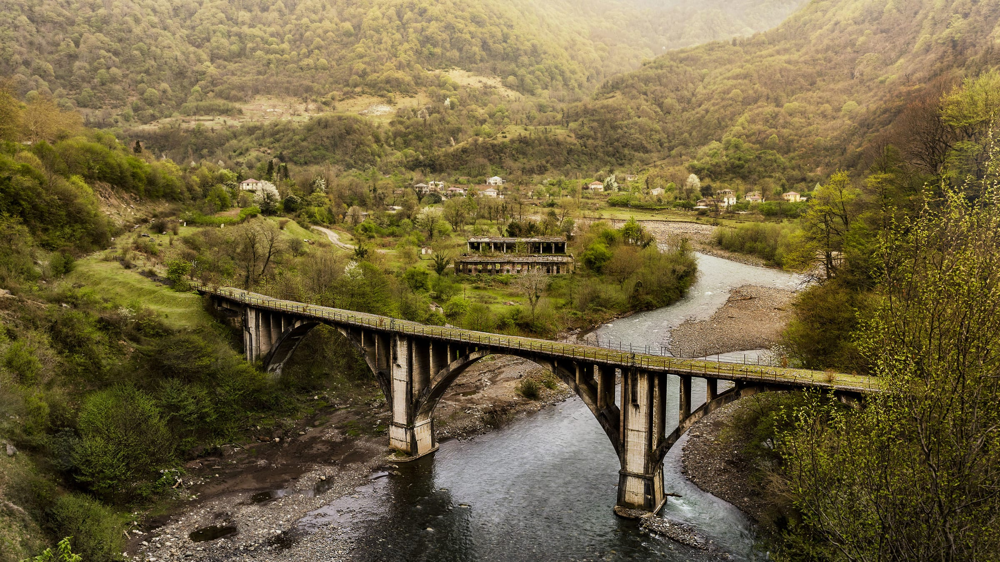
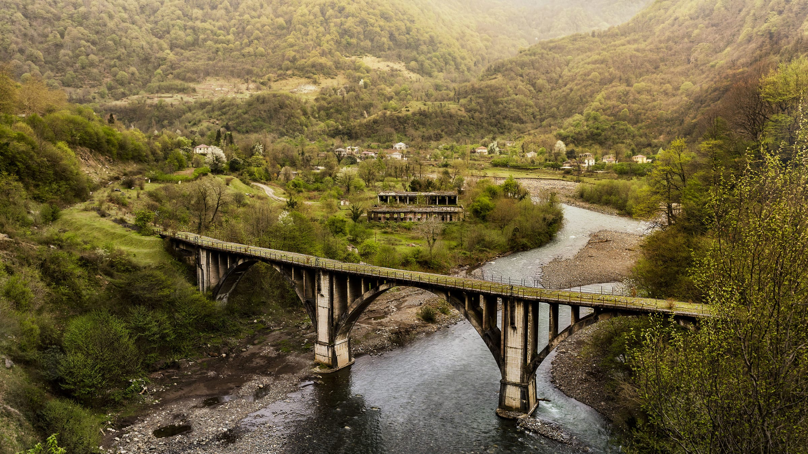
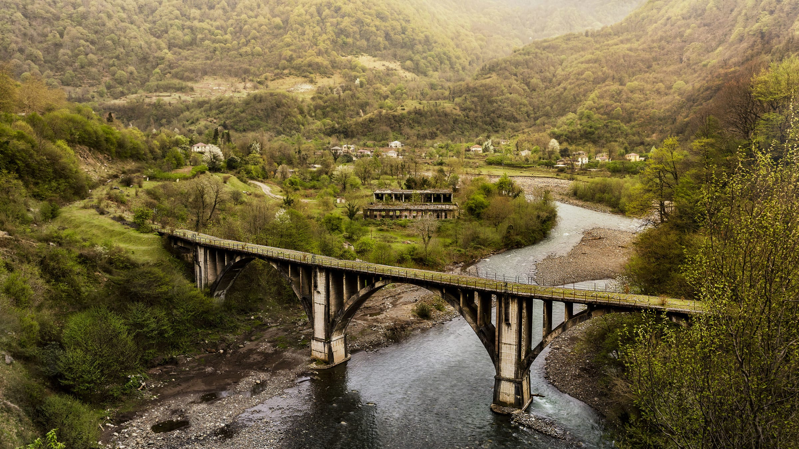

აფხაზეთი (აფხ. [აფსნჷ]) — საქართველოს ისტორიულ-გეოგრაფიული მხარე, ქვეყნის ჩრდილო–დასავლეთით, შავი ზღვის აღმოსავლეთ სანაპიროზე, დღეს ავტონომიური რესპუბლიკის სტატუსით, უკავია 8,7 ათ. კვ.კმ. ტერიტორია მდინარეებს ენგურსა და ფსოუს შორის. ოკუპირებულია რუსეთის ფედერაციის შეიარაღებული ძალების მიერ 2008 წლის რუსეთ-საქართველოს ომის შემდგომ (იხ. საქართველოს კანონი ოკუპირებული ტერიტორიების შესახებ), იმართება მარიონეტული დე ფაქტო ხელისუფლების მიერ. მისი დამოუკიდებლობა აღიარა რუსეთმა და სხვადასხვა გარიგებების სანაცვლოდ ნიკარაგუამ, ვენესუელამ და ნაურუმ. ჩრდილოეთით ესაზღვრება რუსეთის ფედერაციას, სამხრეთ-აღმოსავლეთით საოკუპაციო ხაზი გადის სამეგრელო-ზემო სვანეთის მხარის ადმინისტრაციული საზღვრის გასწვრივ.
აფხაზეთი მდინარე ენგურიდან მაცესტამდე (უბიხეთის საზღვრამდე) დასახლებული იყო აფხაზურენოვანი ტომებით, რომელიც აერთიანებდა რამდენიმე ისტორიულ ოლქს: საძენი (ანუ ჯიქეთი), ბზიფი, გუმა, შუა სოფელი, სამურზაყანო და წებელდა-დალი. აფხაზეთი, როგორც პოლიტიკური ერთეული, სხვადასხვა ეპოქაში სხვადასხვა ტერიტორიას მოიცავდა და მისი საზღვრები არასდროს ემთხვეოდა ეთნიკურ აფხაზეთს, ე. ი. აფხაზური ტომებით დასახლებულ მიწებს.
გეომორფოლოგიურად აფხაზეთი ძირითადად მთაგორიანი რეგიონია. დაახლოებით 74 % მთებსა და მთისწინეთს უჭირავს, დანარჩენი — ვაკე-დაბლობებს. მთიან ნაწილში სტრუქტურულ-დენუდაციური ქედები და მათ შორის მოქცეული ტექტონიკურ-ეროზიული ხეობები ჭარბობს. ქედებიდან უდიდესია ჩრდილო-დასავლეთიდან სამხრეთ-აღმოსავლეთისკენ გადაჭიმული კავკასიონის მთავარი წყალგამყოფი ქედი. ქედის მთავარი მწვერვალებია: აგეფსთა (3257 მ), ფსიში (3970 მ), ერწახვი (3910 მ), დომბაიულგენი (4046 მ), გვანდრა (3985 მ). ასევე კლუხორისა (2781 მ) და მარუხის (2746 მ) უღელტეხილები. ქედის ამგებელ კამბრიულისწინა კრისტალურ და პალეოზოურ მეტამორფულ ქანებზე ძველი და თანამედროვე მყინვარული ფორმებით მდიდარი ალპური რელიეფი სჭარბობს. მთავარი ქედი ციცაბოდ ეშვება მდინარეების საკენის, ჩხალთისა და ბზიფის ტექტონურ-ეროზიული ხეობებისაკენ. აფხაზეთის მთიანი შუა ნაწილი უჭირავს კავკასიონის გვერდით ქედებს: გაგრის, ბზიფის, კოდორისა და სვანეთ-აფხაზეთის ქედებს, რომლებსაც თავის მხრივ, მრავალი განშტოება აქვთ. გაგრის მერიდიანულ ქედზე, რომელიც მდინარეების გაგრიფშისა და ჟოეკვარის ხეობებს ბზიფის ხეობისაგან გამოყოფს, უხვადაა განვითარებული რელიეფის კარსტული ფორმები. აფხაზეთის თითქმის ცენტრალური ნაწილი ბზიფის სუბგანედურ ქედს (მწვ. კაპიშისტრა 3156 მ) მდინარეების კოდორის, ხიფსთის, ააფსთის, გუმისთის, კელასურისა და ბზიფის აუზების წყალგამყოფს უჭირავს. ქედის დასავლეთ ნაწილი კირქვებითაა აგებული და რელიეფის კარსტული ფორმებით ხასიათდება, აღმოსავლეთი ნაწილი პორფირიტულია, ჭარბობს მთა-ხეობათა ეროზიული და გლაციალური ფორმები. აფხაზეთის შუა, მთიანი ზოლის აღმოსავლეთი ნაწილი მდინარეების კოდორისა და ენგურის ღრმა ხეობებს შორის აღმართულ კოდორისა და სვანეთ—აფხაზეთის ქედებს უჭირავს. მწვერვალი ხოჯალის (3309 მ) დასავლეთით მდებარე კოდორის ქედი შედარებით დაბალია და თანამედროვე მყინვარებს მოკლებული. მწვერვალ ხოჯალის ჩრდილო-აღმოსავლეთით აზიდული სვანეთ-აფხაზეთის ქედი კი გაცილებით მაღალია (მწვერვალები მოგუაშირხა — 3847 მ, ხარიხრა — 3710 მ) და მარადი თოვლითა და მყინვარებით არის დაფარული. ამ ქედის ყველაზე მოხერხებული უღელტეხილია ხიდა (2633 მ), რომელიც აფხაზეთს ზემო სვანეთთან აკავშირებს. სვანეთ-აფხაზეთის ქედი ტიპური ალპური რელიეფით ხასიათდება, კოდორის ქედს კი უმეტესად ნაზი რელიეფი აქვს. აქ უკიდურეს დასავლეთ კირქვულ ნაწილში კარსტული რელიეფია განვითარებული. მთიანი აფხაზეთი გამოირჩევა ზედაპირის ეროზიული დანაწევრების დიდი სიღრმით. გასწვრივი ტექტონურ-ეროზიული ხეობები შედარებით განიერი და დამრეცია, განივი კი ვიწრო და დახრილი. ბევრგანაა კანიონი და კლდეკარი. აფხაზეთის კავკასიონის სამხრეთ კალთაზე გადაჭიმულია რთული აგებულების მთისწინეთის ზოლი, რომელიც მკვეთრად დანაწევრებული გორაკ-ბორცვიანი, სერებიანი და ტაფობებიანი რელიეფით გამოირჩევა. გავრცელებულია რელიეფის ტექტონურ-ეროზიული, კარსტული და მეწყრული ფორმები, აგრეთვე ზღვიური და მდინარული ტერასები. მთისწინეთში გამოიყოფა კირქვებით აგებული კარსტული (გაგრის, ახალი ათონის, სოხუმის, წებელდის) და არაკარსტული, ზოგან დამეწყრილი (განთიადის, მიუსერის, ეშერის და სხვა) უბნები. მთისწინეთს შავი ზღვის სანაპიროს გასწვრივ აკრავს ალუვიური ვაკე-დაბლობები, რომლებიც ზღვისაგან დიუნებით არის გამოყოფილი. სოხუმის ჩრდილო-დასავლეთით ვაკე-დაბლობს მცირე ტერიტორია უჭირავს, სამხრეთ აღმოსავლეთით კი თანდათანობით განვითარდება (სამურზაყანოს დაბლობი). აფხაზეთის სანაპირო ზოლი სწორხაზოვანია. აღსანიშნავია სოხუმისა და გაგრის უბეები, ბიჭვინთისა და სოხუმის კონცხები.